Hi, I'm
jonathan barceló
A producer person with over 13 years of experience leading co-located and remote teams across various disciplines in the games industry.

scroll
A producer person with over 13 years of experience leading co-located and remote teams across various disciplines in the games industry.
A mix of professional work and passion projects that reflect my core interests and professional capabilities.
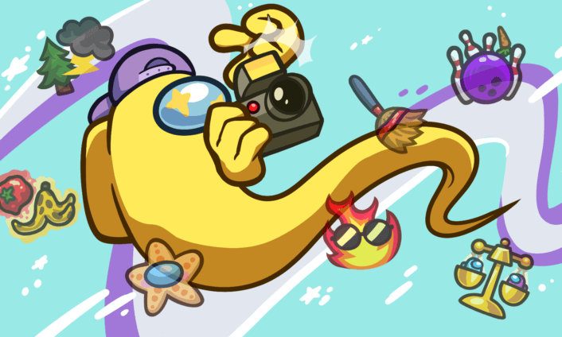
As part of my role as the Producer for Among Us, I have led the development of seven new roles (and counting). Our process is iterative and collaborative, involving inputs from every craft. It's the most fun I've ever had figuring out who killed all my friends (me, probably).
Read all about it →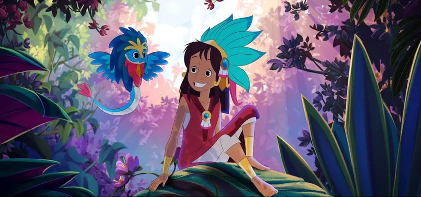
Co-wrote and pitched an original screenplay for an independently funded animated feature. The finished film premiered at FICG (Mexico), BFI (UK), and Sitges (Spain), with a wide theatrical release across all major Mexican theaters slated for November 19th, 2026.
Watch the trailer →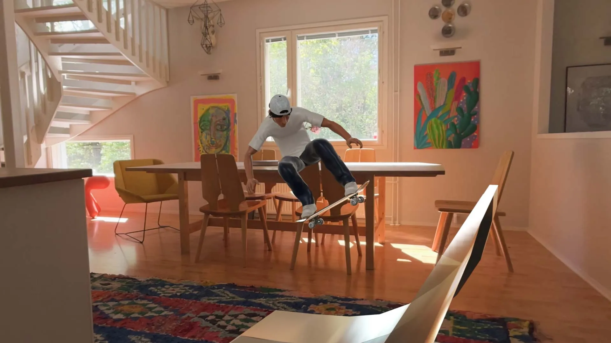
Published by Niantic, Skatrix was an Augmented Reality skateboarding game developed in collaboration with legendary skater Rodney Mullen. I headed the game's production, working with the studio founder to fund the project, build a team, and figure out how an AR skate game is even supposed to work.
Watch it in action →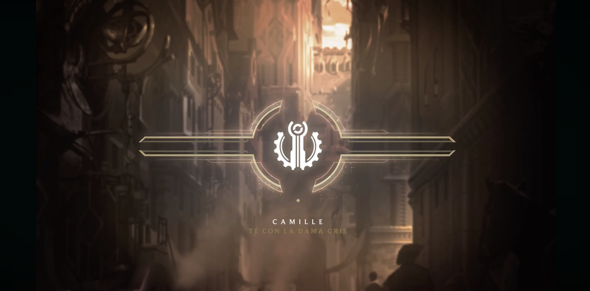
An offshoot of a localization project I ran at Riot Games. I worked with local musicians in Mexico City and the game's VO talent to bring League of Legends lore to Latin American players in the form of short radio plays.
Tune in →From localization to game production, and plenty of tangents along the way — here are some of the steps that brought me to where I am today.
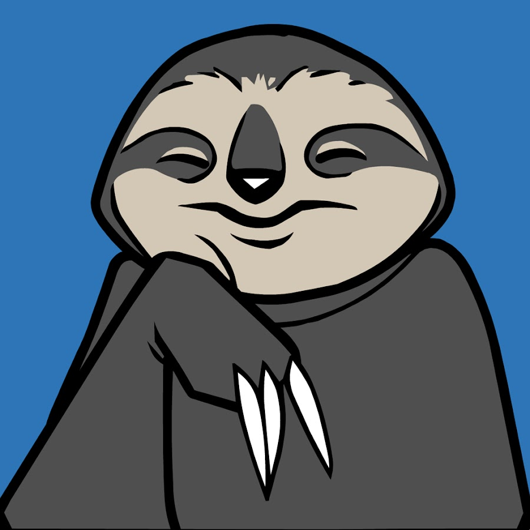
Innersloth
I serve as the Producer for Among Us, where I lead and coordinate a cross-functional team of programmers, backend engineers, artists, game designers, QA testers, and localization professionals in the full development lifecycle, from concept to release (and all subsequent live ops). While in this position, I have been responsible for guiding the team through numerous gameplay and content updates, an overhauled matchmaker, improved player reporting flows, and countless process and workflow improvements that have helped Among Us sustain its massive player base, even as the game approaches its 10 year anniversary.
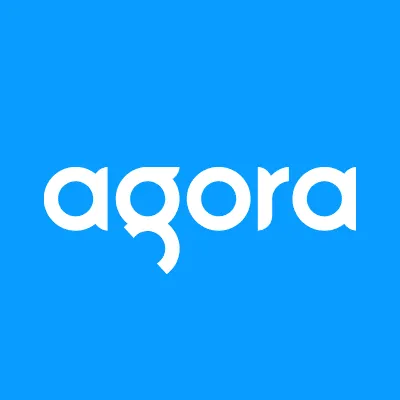
Agora
Agora is a real-time engagement platform as a service provider, where I lead the company's efforts to solve the challenge of enabling presence from any device into any virtual world or gaming application by: conducting market research and competitive analysis; managing the product development lifecycle, including gathering requirements from customers and Agora's solutions architect team; leading the development of reference applications designed to showcase Agora's capabilities with game engines and web applications.
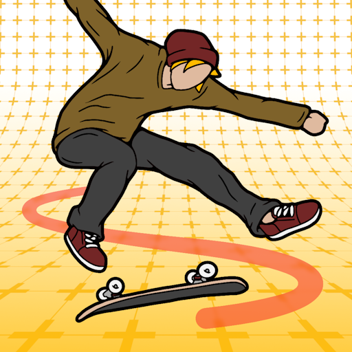
Reality Crisis
Reality Crisis is a distributed Augmented Reality mobile game development studio focused on bringing real-world interactions to the action sports genre, where I worked with the company founders to bring their flagship game to market, from 0 -> 1. While in this position, I led R&D efforts to test viability of 7 different emergent Augmented Reality technologies for mobile game development by: conducting customer research interviews and usability tests to inform design iterations on early game prototypes; collaborating with company leadership and internal stakeholders to define, prioritize and execute on the roadmap for Skatrix; defining the tech stack for Skatrix as a live service game, and managing the resulting backlog; implementing Agile project management methodologies to serve a team of artists, engineers, designers, and QA testers distributed across 6 different timezones in Europe, Oceania, and the Americas.
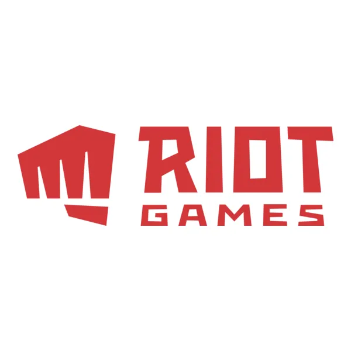
Riot Games
In addition to maintaining continuity of my responsibilities in the localization team, I developed and produced landmark original content for the LATAM region: audio stories, documentaries, Esports news and analysis, behind the scenes featurettes, animations, and live audiovisual experiences.
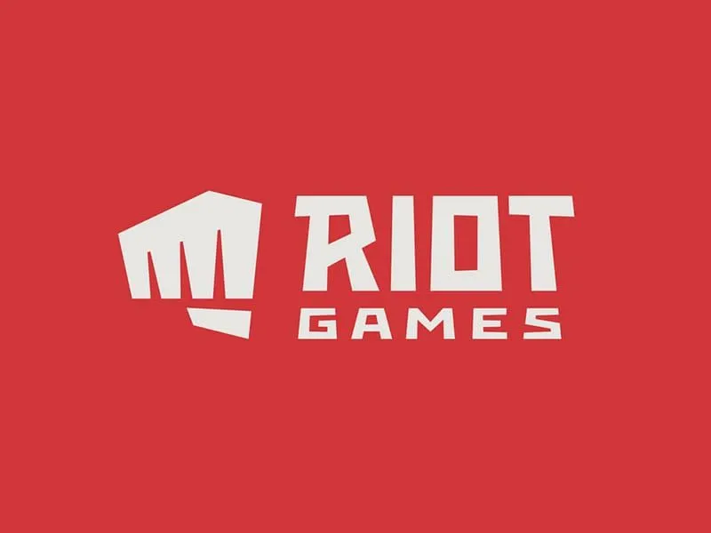
Riot Games
As a founding member of the LATAM team, I was responsible for implementing localization best practices for web pages, graphics, comics, promos, and in-game text strings, as well as managing LATAM LQA, and VO localization pipelines.
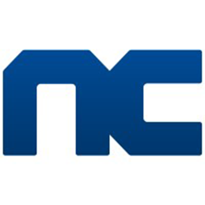
NCSOFT
I led external player support teams in crafting and localizing player communications for Guild Wars, Guild Wars 2, Lineage II, and during the release of Wildstar.
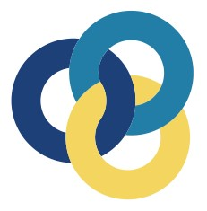
2025The Agile Company
The Narrative Department
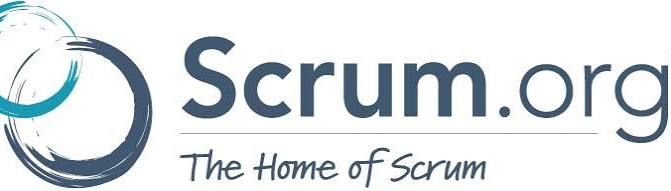
2019Scrum.org
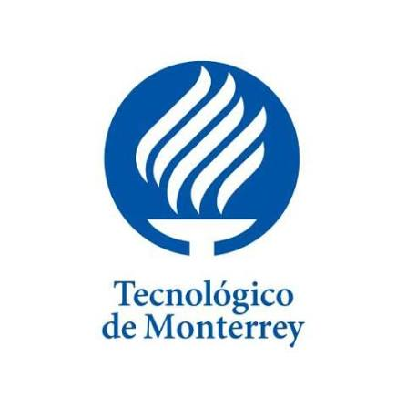
2019Tecnológico de Monterrey
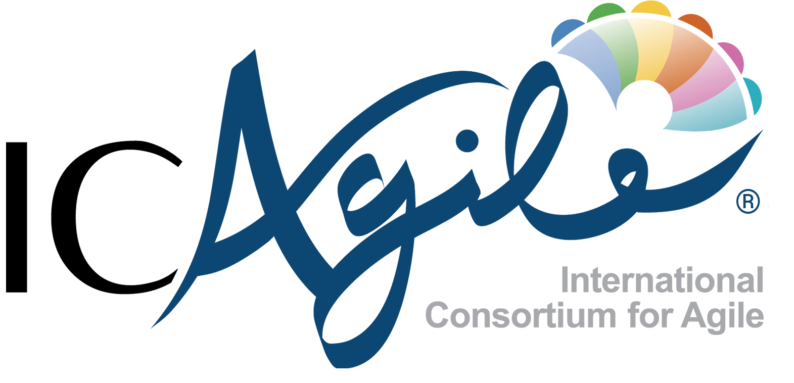
2017ICAgile
ICAgile
University of Texas at Austin
University of Texas at Austin